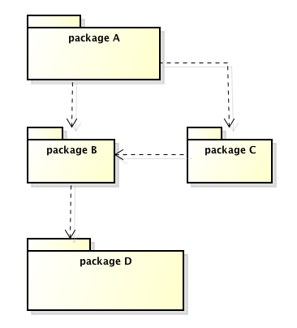
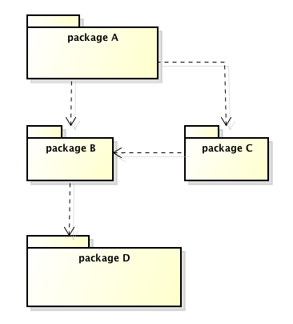

去除循環相依性 Posted:
模組間依賴關係應維持單向相依，若出現循環相依，會造成系統編譯建置上的困難。
如下圖，Ｄ是Ｂ的底層，Ｂ是Ａ和Ｃ的底層，Ｃ是Ａ的底層。底層若變動，依賴於它的模組可能要隨著調整並重新編譯。因此當Ｄ變動則調整Ａ、Ｂ、Ｃ並全部重新編譯; 當Ｃ異動，則只有Ａ受影響需要重新編譯; 如果只有Ａ異動，那很好，沒有模組受影響，只要編譯Ａ就好。如此，我們限縮了異動影響範圍。
模組間依賴關係應維持單向相依，若出現循環相依，會造成系統編譯建置上的困難。
如下圖，Ｄ是Ｂ的底層，Ｂ是Ａ和Ｃ的底層，Ｃ是Ａ的底層。底層若變動，依賴於它的模組可能要隨著調整並重新編譯。因此當Ｄ變動則調整Ａ、Ｂ、Ｃ並全部重新編譯; 當Ｃ異動，則只有Ａ受影響需要重新編譯; 如果只有Ａ異動，那很好，沒有模組受影響，只要編譯Ａ就好。如此，我們限縮了異動影響範圍。
依賴反轉是物件導向原則之一，維基 [1] 上說這個原則有兩項要求：
只是...究竟是什麼東西被“反轉”了？